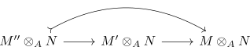

M-flat for a submodule
Proposition
Let \(A\) be a ring, $M,N$ \(A\)-modules. Suppose $M' \subseteq M$ is a submodule and $N$ is M-flat. Then $N$ is also \(M'\)-flat
Proof
Let $M'' \hookrightarrow M'$ a submodule inclusion. Then so is $M'' \hookrightarrow M' \hookrightarrow M$ an inclusion By assumption and functoriality we get
